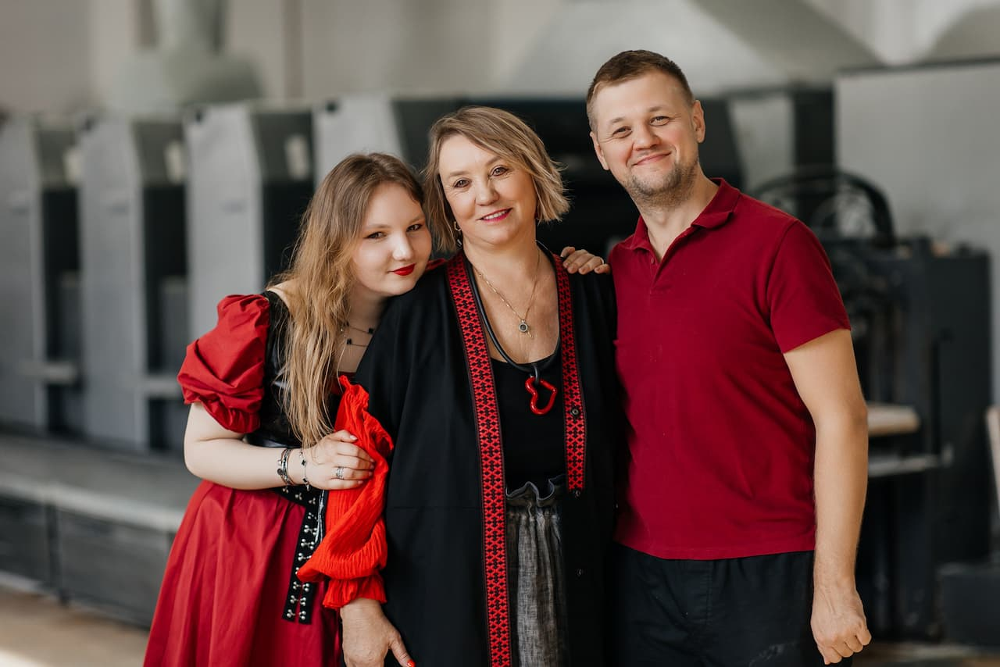

Арт-салон, приуроченный к дню рождения типографии «Лазурь»

30 апреля 2026 года типография «Лазурь» отметила своё 29-летие необычным событием — первым Арт-салоном. На один день наше предприятие превратилось в пространство, где печатное дело встретилось с чистым искусством.
Выставки, мастер-классы, живая музыка, показ мод и тёплое общение — рассказываем, как это было, и благодарим всех, кто помог этому дню случиться.
Встреча гостей
Гостей встречали сотрудники бухгалтерии «Лазури» в образах красок, карандашей и художников — живые фигуры задавали тон с первых минут. Они провожали прибывших до фотозоны и рассказывали, что ждёт дальше.


Фотозона с картиной Анастасии Нильской стала первой точкой притяжения — здесь с удовольствием фотографировались все без исключения.
Конкурс инсталляций
Отдельные сотрудники предприятия подготовили творческие инсталляции. Каждая работа — это самостоятельное художественное высказывание, отражающее атмосферу и дух «Лазури». Конкурс показал, насколько многогранны таланты нашего коллектива.


Выставочные залы
Холл, коридоры и цеха типографии превратились в выставочные залы. На стенах разместились работы художников, с которыми сотрудничает наше предприятие, и картины из нашей коллекции. Гости могли свободно перемещаться по пространству, рассматривая экспозицию.


Музей Endograund
Музей Endograund представил отдельную экспозицию. Экскурсию проводила сотрудница музея — те, кто успел послушать, остались под большим впечатлением и решили обязательно посетить музей лично.


Ирбитский музей
Ирбитский музей привёз собственную экспозицию и провёл экскурсию для всех желающих. Благодаря увлекательному рассказу экскурсовода у гостей появился искренний интерес посетить музей. Впечатления — самые тёплые.


ART-выставка WOMEN
Организатор выставки — Екатерина Бузмакова, основатель платформы «ЖАБА» (vk.ru/zhaba_hub). Миссия проекта — создавать пространство, где искусство становится личной историей каждого, где зритель знакомится не с «объектами», а с живыми авторами и их внутренними мирами.
Выставка WOMEN — это погружение в многогранную женскую природу: от нежной романтики до дерзкой силы. Восемь женских образов, объединённых в пары картин, сопровождались живым словом и арома-перформансом — четыре стиха и четыре аромата.
Художники: Teonanakatl, Van Gar, Наталья Гущина, Hasan.
Поэтический перформанс — Максим Михеев (актёр, режиссёр, поэт, сценарист, руководитель студии сценического искусства «Театр мечты», театра поэтов «Три точки»). Арома-перформанс — Алиса (искусствовед, медиатор, лектор).
Гости сопоставляли арома-полоски с разными запахами и угадывали, какой запах какой картине подходит больше, пока Максим читал стихи — монолог женского персонажа.


Мастер-классы
Все гости могли участвовать в различных мастер-классах, что с большим удовольствием и делали. Мастер-класс по рисованию картин провела Наталья Карпенко. Мастер-класс по гончарному мастерству — Алсу.
Поскольку цехов на предприятии много, все мастер-классы разместились в разных помещениях — суеты и толпы не было, каждый свободно перемещался, занимался и общался. Многие пришли с детьми и внуками — и всем было чем заняться, никто не скучал.


Живые полотна
Идея и воплощение живых полотен — полностью силами наших сотрудников. Спасибо Агапову В. и всем художникам, принявшим участие.
Гости были в большом восторге от этого интерактивного знакомства с искусством. Место для живых полотен оборудовали в тамбуре цеха — спасибо хозяйственному отделу и лично Будунаеву А.В.
Винный и шоколадный фонтаны
С самого начала мероприятия работали винный и шоколадный фонтаны, создавая атмосферу праздника и собирая гостей для непринуждённого общения.

Музыкальное сопровождение
Музыкальное сопровождение в течение всего вечера обеспечила школа искусств. Исполнители: Алферьева Анна Валерьевна и Ватутина Светлана Александровна (завучи), Трегубова Елена Георгиевна, Ундольская Надежда Николаевна, Скосырская Татьяна Викторовна. В их исполнении прозвучали классические и современные произведения, создавая особую атмосферу на протяжении всего мероприятия.

- В. Одоевский «Сентиментальный вальс»
- N. Rota «Speak Softly Love»
- Е. Дога «Вальс» из к/ф «Мой ласковый и нежный зверь»
- М. Легран «Мелодия» из к/ф «Шербургские зонтики»
- В. Киселев «Мой путь»
- L. Weber «Memory»
- Дж. Верди «Дуэт Альфреда и Виолетты» из оперы «Травиата»
- Л. Бетховен «Прощание с фортепиано»
- А. Грибоедов «Вальс»
- М. Титов «Вальс»
- Ф. Шуберт «Шесть вальсов»
- Ж. Бизе Фрагмент из оперы «Кармен»
- Ж. Бизе «Хабанера» из оперы «Кармен»
- Жилин «Полька»
- Д. Шостакович «Полька-шарманка»
- И. Штраус «Две польки»
- И. Штраус «Полька-пиццикато»
- К. Франсуа и И. Рево «Мой путь»
- А. Л. Уэббер «Память»
- Дж. Дассен «Если б не было тебя»
- Дж. Шеринг «Колыбельная»
- Ф. Лэй «Мелодия» из к/ф «История любви»
- Дж. Леннон, П. Маккартни «Yesterday»
- Ф. Шопен «Вальс» си минор
- А. Грибоедов «Вальс» ля бемоль мажор
- М. Дворжак «Этюд» тетрадь №6
- Ф. Шуберт «Ave Maria»
- Г. Пахульский «Прелюд»
- Ж. Массне «Элегия»
- Ф. Шопен «Прелюдия»
- А. Рубинштейн «Мелодия»
- Л. Бетховен «К Элизе»
- А. Рыбников Романс «Я тебя никогда не забуду» из рок-оперы «Юнона и Авось»
- Б. Кемпферт «Путники в ночи»
- С. Намин «Мы желаем счастья вам»
- D. Henley «Hotel California»
- Б. Мэй «Песня группы Queen»
Показ мод
Показ мод стал одним из центральных событий Арт-салона. Подиум изготовили своими силами — спасибо хозяйственной бригаде. Профессиональное освещение картин и подиума обеспечил Костоусов Н., главный механик предприятия. Он же выступил комментатором всего показа.

Коллекции «Лазури»
Четыре коллекции футболок, придуманные и напечатанные в «Лазури», представили: Василий Ромашкин, Сергей Меренков, Анастасия Нильская и Сергей Уваров. Даша Деева невероятно оживила коллекцию Анастасии Нильской, сделав её самой весёлой — с интересными дизайнерскими находками.
Особая благодарность — нашим сотрудницам, помогавшим в создании головных уборов: Минеева С., Чиклина С., Подкина Е., Шарипова Л.


Коллекция Людмилы Носковой
Приглашённая коллекция — «Весна в ритме любимого города» от дизайнера одежды Людмилы Носковой. Она вдохновилась городом Реж — его ритмом, фасадами и добрыми, талантливыми людьми, а также картинами художника Евгения Гладких. Его рисунки ожили в вышивке на одежде. Идея коллекции: когда мы вместе — мы сила.
Дизайнер одежды — Людмила Носкова. Художник — Евгений Гладких. Модели — студия Александры Гладышевой.


Сумки Андрея Вяткина
В показе также участвовали вязанные женские сумки Андрея Вяткина — чемпиона Урала и России по парикмахерскому искусству 2010 года, полуфиналиста Russian Hairdressing Awards. Андрей работает в области женской моды 16 лет, а вязанные сумки создаёт более года (продано более 50 экземпляров). Основатель будущего бренда VIATKIN SECRET (vk.ru/clubvyatkin).


Модели — наши сотрудники
Моделями выступили наши сотрудники. Они месяц учились ходить правильно по подиуму — и сделали это профессионально и красиво. Все футболки, шопперы, зонты, джинсовки — придуманы и напечатаны в «Лазури».


Поздравления от партнёров
После показа прозвучали поздравления от поставщиков и партнёров. Это было приятно и трогательно — спасибо всем за тёплые слова и поддержку.

Фуршет
Фуршет стал временем непринуждённого общения и обмена впечатлениями. Ответственная за вкусное составляющее — Ларина Л. Отдельное спасибо компании-организатору обслуживания.


Завершение вечера — джаз
Завершил вечер джазовый коллектив из Екатеринбурга. Отличное, зажигательное исполнение джаза добавило настроения и эмоций всем гостям.


Все сотрудники пришли очень красивыми и стильными — как и подобает посетителям Арт-салона. Мероприятие получилось душевным, познавательным и красивым. Это была отличная генеральная репетиция перед юбилеем в следующем году.
Обязательно придумаем что-то не менее интересное и удивим вас. Оставайтесь с нами, наши друзья, партнёры, заказчики, коллеги!